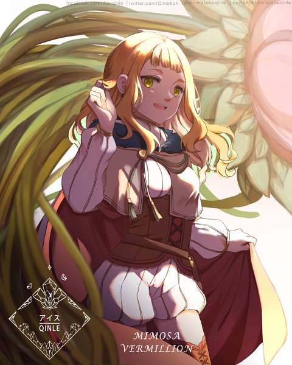

Familia Vermillion
La Familia Vermillion una de las anteriores mencionadas nobles familias, destacan al mayormente
tener afinidad al elemento fuego o derivados, su afan heredaro por la lucha y su calma impasible
son caracteristicas en su total hermosas al destacar, el dominio de una llama tan poderosa para
penetrar cualquier barrera, aunque no todos los miembros de la familia son acogidos por las
llamas tal sea el caso de de Mimosa Vermillion, prima de Noelle Silva, Mimosa posee magia
curativa de tipo planta y bastante poderosa, llegando a sanar incluso heridas mortales o perdida
de un brazo como maximo visto, es destacable al unirse a la orden de caballeros magicos del
Amanecer Dorado y junto a Yuno y Asta es capaz de lograr una combinacion efectiva y perduradera,
su potencial al igual que Noelle podria superar a su pariente mas experimentado.
Eso es todo por ahora.
